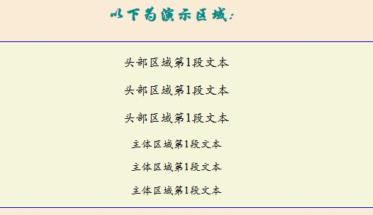

CSS3 选择器在 CSS2.1 的基础上增加了属性选择器、伪类选择器、过滤选择器。
CSS3 选择器可以分为五类：
1）基本选择器
2）组合选择器
3）伪类选择器
4）伪元素选择器
5）属性选择器
其中，伪类选择器又可以细分为6种：
1）动态伪类选择器
2）目标伪类选择器
3）语言伪类
4）UI 元素状态伪类选择器
5）结构伪类选择器
6）否定伪类选择器
1、标签选择器
标签选择器直接引用 HTML 标签名称，也称为类型选择器，规定了网页元素在页面中的默认显示方式。
示例代码：
p{
font-size:12px;
color:red;
}
</style>
2、类选择器
类选择器能够为网页对象定义不同的样式，实现不同元素拥有相同的样式，相同元素拥有不同样式。
类选择器一个（.）前缀开头，紧跟一个自定义类名。
应用类样式可以用class 属性来实现。
示例代码：
示例1：
p{
font-size:12px;
color:red;
}
.font18px{font-size:18px;}
</style>
效果如下图所示：
第二段应用了属性.font18px，因此字体显得更大些。
示例2：
p{
font-size:12px;
color:red;
}
.font18px{font-size:18px;}
.underline{ text-decoration:underline;}
.italic{ font-style:italic;}
</style>
效果如下图：
第一段应用了属性.underline；第三段则应用了.italic;
第二段则用了三个属性：.font18px .underline .italic
示例3：
p{
font-size:12px;
color:red;
}
.font18px{font-size:18px;}
p.font18px{ font-size:24px; }
</style>
3、ID 选择器
ID 选择器以井号(#)作为前缀，紧接着是一个自定义的 ID 名。
应用 ID 选择器可以使用 id 属性来实现.
示例1：
#box{
background: url(images/2.jpg) center bottom;
height: 200px;
width: 400px;
border: solid 2px red;
padding: 100px;
}
</style>
效果如下图：
也可以在 ID 选择器之前增加一个 HTML 元素标签，针对上例则可以增加一个 div 组成 div#box
此时的优先级会大于原来单纯的 #box，也即是说，在同等条件下，浏览器会优先解析 div#box 选择器定义的样式。
一般通过 ID 选择器来定翼 HTML 框架的布局效果，因为 HTML 框架元素的 id 都是唯一的。
4、通配选择器
如果 HTML 所有元素都需要定翼相同的样式，则可以使用通配符选择器；通配符选择器通过(*)来表示。
示例：
margin:0;
padding:0;
}
当把两个或多个基本选择器组合在一起，就形成了一个复杂的选择器，即组合选择器。
1、包含选择器
示例1
#header p {font-size:14px;}
#main p {font-size:12px;}
</style>
效果如下图：
2、子选择器
子选择器，是指定父元素包含的子元素。
子选择器使用"<"表示。
示例：
span{/*span 元素默认样式*/
font-size:12px;
}
div < span { /*div 元素包含的 span 子元素的默认样式*/
font-size:24px;
}
</style>
运行效果如下图：
3、相邻选择器
相邻选择器，通过加号(+)分隔符进行定义。其基本结构是第一个选择器指定前面相邻元素，
后面选择器指定相邻元素。
前后选择符的关系是兄弟关系，即在 HTML 结构中，两个标签前为兄后为弟，否则样式无法应用。
示例：
h2,p,h3 {
margin:0;
padding:0;
height:30px;
}
p+h3{ background-color:#0099FF; }
</style>
运行效果如下图：
4、兄弟选择器
CSS3 增加了新的选择器组合形式——兄弟选择器。通过波浪号（~）分隔符进行定义。
其基本结构是第一个选择器指定同级前置元素，后面的选择器指定其后同级所有匹配元素。
前后选择符的关系是兄弟关系，即在 HTML 结构中，两个标签前为兄后为弟，否则样式无法应用。
对于示例只需将相邻选择器的示例进行修改，将加号改成波浪号即可。
5、分组选择器
分组选择器通过（,）分隔符进行定义。其基本结构是第一个选择器指定匹配元素，后面选择器指定另一个匹配元素
，最后把前面选择器匹配的元素都选取出来。通过分组选择器可以实现集体声明，将样式表中一致的CSS样式放在一起，减少书写代码量。
示例：
<style type="text/css">
h2,h3,h4,h5,h6{
background-color: #99CC33;
margin: 0;
margin-bottom: 10px;
}
h2+h3,h4+h5{color: #0099FF;}
body>h6,h1>span,h4>span{font-size: 20px;}
h2 span,h3 span{padding: 0 20px;}
h5 span[class],h6 span[class]{background-color: #CC0033;}
</style>
运行效果如下图：